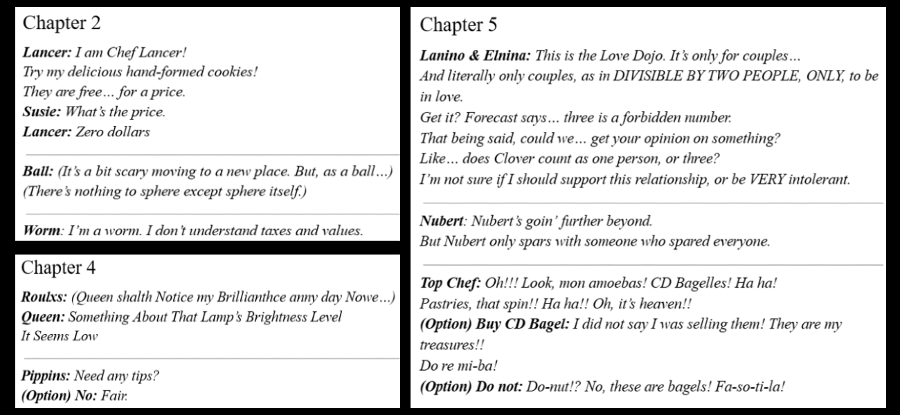
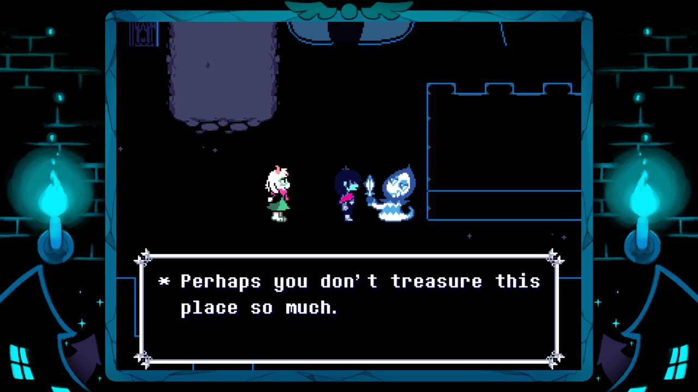
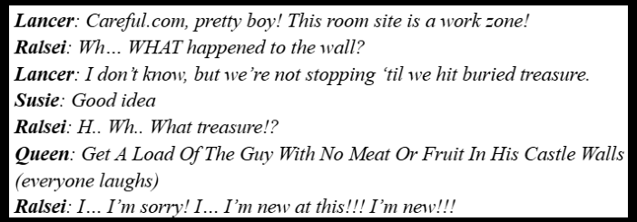
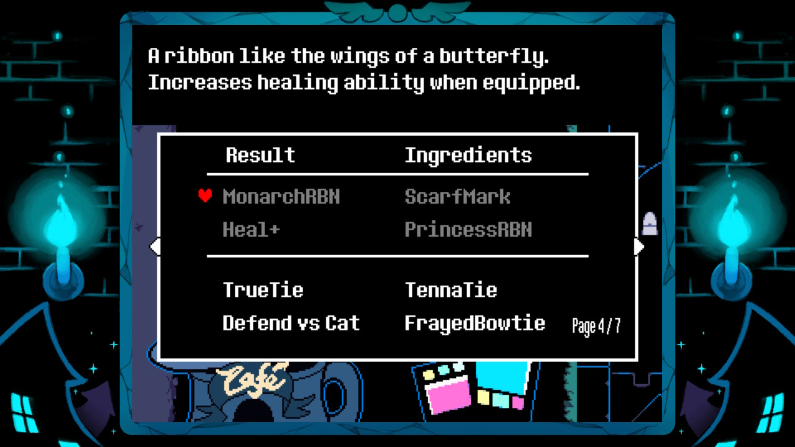

Castle Town serves as a consistent Dark World throughout Deltarune’s Chapters. It contains Ralsei’s castle and the Grand Fountain, and is able to host darkners from other chapters. In Chapter 1, the location serves as a jumping off point for the chapter’s story, but the town itself gets fleshed out at the beginning of Chapter 2. It initially houses the Bakery, Party Dojo, Cafe, and Seam’s shop, but more buildings are added after each chapter. If the player recruits various enemies throughout the game, those enemies appear here and interact with the environment, unlocking new activities and changing Castle Town’s theme. My personal opinion of Castle Town is very mixed, as it has some very great aspects but also feels pretty lackluster at being a true “hub area” for the game.
What Castle Town Gets Right
Castle Town knocks it out of the park when it comes to its writing. First off, the dialogue for the various residents is especially entertaining, ranging from interactions between residents from different dark worlds, lore reveals, or just “bad” quips/puns. A lot of the “humorous” dialogue is subversive, with the payoff being different than what the buildup would have you believe. Some of my favorite dialogue from Chapters 2, 4, and 5 is shown below.

Seam’s shop is certainly a highlight, as it’s one of the most lore-heavy places in the entire game. A lot of his dialogue is foreshadowing or discussing the game’s world in a vague sense, with something to dissect almost every visit. In Chapter 2, after handing him two of the Shadow Crystals, he hints that the fight with the next shadow crystal boss “may be impossible to win. Unless you use the power of the Shadow Mantle.” He attempts to give it to you, but discovers that it is missing, hinting towards The Roaring Knight as the next crystal boss and Chapter 3’s SWORD Route as a way to inform the player about Chapter 2’s “Snowgrave Route.” In Chapter 4, he talks about how the Addisons tried to buy out his store, so he challenged them to a game of cards. He states that “hand after hand, they lost and lost, stubbornly doubling their bet each time”, eventually betting away their store, money, and “even some of their clothes.” He then continues that he gave the Addisons all of their stuff back after playing, and that “it was fun to give them a little scare. Although, not as fun as if they could actually win”, potentially hinting towards Seam’s true power, as he was the one to originally seal Jevil away in Card Castle’s basement.
Castle Town’s environment also echoes one of the overall themes of Deltarune. In Chapter 1, Ralsei pleads to King that “You may not realize it, but… This is a world where you don’t have to fight.” and the enemies you spare throughout the adventure appear in Castle Town. The game encourages you to spare all the enemies you encounter by locking you out of certain features of Castle Town, such as Sweet Cap’n Cakes playing music in Chapter 2, Castle Funk playing as the town’s theme in Chapters 4 and 5, and the Trashy Trio fight in Chapter 5 if you don’t. While not every fight is winnable through mercy, all of the fights that you can win through mercy contribute positively to building Castle Town. There is also a Rudinn in the area that welcomes you to “[PLAYER]Town”, comments on Castle Town’s growth after Chapter 2, and comments on the town’s love in Chapter 4 and beyond. He will tell you that the town’s love is Strong if all enemies have been recruited (or Moist if in Chapter 5), Plain if you’re using a default save file, or Cracked otherwise. If your town’s love is cracked, he will mention that “perhaps you don’t treasure this place so much. But it treasures you. Whatever you do”, further guilt tripping the player for not recruiting all of the enemies.

Castle Town also indirectly reveals a bit of Ralsei’s character; how his loose control over Castle Town parallels his loose control over the outcomes of the prophecy. In Chapter 1, Ralsei introduces himself as “the Prince of this Kingdom… The Kingdom of Darkness”, but there is no one to rule over until Kris brings some things from the supply closet over to Castle Town in Chapter 2. Once Castle Town actually has residents, we see Ralsei’s feeble attempts at trying to enforce some kind of order. At the end of Chapter 2, when interacting with the now naked Ralsei mannequin, he exclaims “Wh.. who did this to my mannequin!? A-as your prince, I… I demand someone fix this!! … Umm, is… is anybody listening?” to which Lancer responds “I was listening~!”, with Ralsei sternly retorting “Don’t yell that from across town!”. Later, in Chapter 4, when Ralsei sees Lancer doing construction in the field outside his room, this exchange occurs, showing Ralsei’s lack of experience as a ruler:

The functions of each building changing over time also support Ralsei’s lack of control. For example, the Party Dojo serves as an area to tackle certain challenges in the form of battles. In Chapter 4, this area is transformed into the Love Dojo, with only 1 new battle added. In Chapter 5, the Party Dojo no longer supports battles, with that function now being moved to the Bakery.
This is similar to how Ralsei feels about the prophecy - doing things that he thinks will avoid the prophecy’s consequences, even if they are utterly futile. He thinks that following the prophecy while also utilizing kindness throughout their journey would be enough to stop it, although Flowery questions his logic throughout Chapter 5. Just like how Ralsei was upset at residents who did things they weren’t supposed to, Ralsei is also resentful towards Flowery when Flowery does things that he’s not supposed to, such as pretending to be a human or suggesting to disregard the prophecy. Ralsei follows the prophecy so closely because he is “terrified of the consequences of not following [them], but is unable to answer what he wants to accomplish by obeying them”, giving him this false sense of control that crumbles more and more as the story progresses. As of now, it remains to be seen if the Roaring will actually occur, and how Castle Town and Ralsei’s control over it will develop throughout the rest of the story.
Castle Town’s Weak Spots
Castle Town is really strong in its writing and worldbuilding, but is very lacking in its gameplay. As mentioned before, the functions of each building change during the game, with most activities not being retained throughout each chapter. The area with the most potential is the Party Dojo. Chapter 2 has 5 battles, Chapter 4 adds 1, and Chapter 5 also adds 1. Most of the battles in Chapter 2 are gimmicky minigame-like battles, but some of them are genuine boss battles, and the battles in Chapters 4 and 5 are as well. However, there’s a significant amount of unique battles up to this point that aren’t present in the Dojo. Some of the obvious targets are chapter boss and crystal boss fights, as they are some of the most mechanically engaging battles in the game, but some minibosses are also fun romps too (Clover is the only miniboss included in the Party Dojo). I intentionally have save files meant for refighting bosses because they are that fun, so having a central place to fight them again would be very convenient.
The next area I have a gripe with are the minigames. Chapter 3 introduced several minigames, such as Cooking Show, Rock Video, Monster Movie, and Cowboy minigame, but only Rock Video is replayable in Castle Town. It feels weird to only include one of the minigames from Chapter 3 as a permanent addition when the rest of the minigames were already utilized in the game. The MIKE minigames are added in Chapter 4 but are then removed in Chapter 5, which makes even less sense to me. When interacting with Small Mike, he says “You had your chance to play them YESTERDAY using the code 6453.”, but the story reasons for removing the games don’t outweigh the gameplay aspect of their removal. At least the climbing mechanic from Chapter 4 is preserved, but the lack of minigames from the chapter known for minigames still stings.
In general, the town’s presence as a “hub area” from a gameplay perspective feels pretty weak. First off, you can only go to Castle Town when the story allows, so it feels more like a “rest stop area” than a proper hub area. The things you can do in Castle Town to prepare for the upcoming adventures also don’t feel very impactful. Malius is a neat idea, but his use seems very situational, as you either need to look things up in advance and grab the right items from each chapter to fully utilize him, or encounter him naturally and miss out on fusing certain items since the items needed are no longer accessible. You can only get 1 Spincake and 1 Lancer Cookie from Top Chef and Lancer respectively each in-game day, and Seam’s shop carries “alright” healing items, but his equipment is still from Chapter 1, making him feel stuck in the past.

What I Hope for Future Chapters
I love Deltarune, and I love Castle Town. However, Castle Town isn’t perfect, and I hope its gameplay aspect improves in Chapters 6 and 7. My biggest hope is that more minigames and gameplay changes are added. In Chapter 5, the new mechanic was Platforming, so I hope it gets added to Castle Town as a permanent addition, possibly through the Sourdough minigame. The climbing mechanic from Chapter 4 was retained, so hopefully Platforming is as well. I also hope that the Chapter 3 minigames are retroactively added, but I don’t see that likely happening. I also want the Battle Dojo functionality to be fleshed out more, specifically by adding more battles to it. I would certainly want the crystal and chapter bosses to be added, as well as minibosses like the Flowerlings and Jackenstein. My biggest pipe dream is bringing back the “Sound Test” functionality of Chapter 2, where the Sweet Cap’n Cakes would play different music tracks up to that point. Deltarune’s soundtrack is really great, so having a place to freely listen to it would be amazing. Overall, Deltarune is a game where its story takes precedence over gameplay, which is usually fine, but sometimes things falter because of that decision, with Castle Town being the game’s shining example.